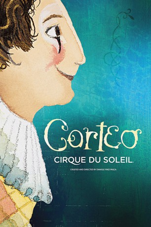

#6747 Cirque du Soleil - Corteo
 
 IMDB-Wertung: 7.6 / 10
IMDB-Wertung: 7.6 / 10  Metascore: 0
Metascore: 0 
Corteo ist der italienische Begriff für eine fröhliche Prozession, eine festliche Parade, die sich ein Clown imaginär einbildet. Die Show verbindet die Leidenschaft des Schauspielers mit der Anmut und der Kraft des Akrobaten und taucht das Publikum in eine theatralische Welt voller Spaß, Komödie und Spontanität - und das in einem mysteriösen Ort zwischen Himmel und Erde.
Jahr: 2006
Dauer: 101 Minuten
FSK:
Land: USA Studio: Sony Pictures Home EntertainmentTonspuren:
Untertitel:
Auflösung: SD (592x320) Größe: 680 MB
Genre: Fantasy, Familie, Musical
Regisseur: Jocelyn Barnabé, Danielle Finzi Pasca, Jacques Méthé, Line Tremblay
Drehbuch: Guy Laliberté
Soundtrack:
Darsteller:
- Nicolas Arnaud als (uncredited
- Mauro Mozzani als The Dead Clown / The Marionette / Helium Dance
- Igor Issakov als The White Clown
- Sean Lomax als The Loyal Whistler
- Valentyna Pahlevanyan als The Clowness / Helium Dance / Adagio Duet
- Grigor Pahlevanyan als The Little Clown / Little Horse / Adagio Duet
- Victorino Luján als The Giant Clown
- Paul Bisson als Singer
- Estelle Esse als Singer
- Marie-Michelle Faber als Backing Vocals / Chandeliers
- Helena Sadanha als Backing Vocals / Chandeliers
- Evelyne Allard als Chandeliers
- Julie Dionne als Chandeliers
- Omar Cortes als Bouncing Beds / Tournik
- Edi Moreno Barata als Bouncing Beds
- Mitchell Head als Bouncing Beds
- Mary Sanders als Bouncing Beds / Little Horse
- Gustavo Lobo als Bouncing Beds / Tournik
- Ciprian Veres als Bouncing Beds / Tournik
- Stéphane Beauregard als Cyr Wheel / Teeterboard
- Jeremie Robert als Cyr Wheel / Teeterboard
- Yuliya Rasinka als Cyr Wheel / Rythmic Gymnastic
- Peter Stoyanov als Cyr Wheel / Teeterboard
- Kit Chatham als Little Horse
- Rebecca Jose als Little Horse / The Marionette / Paradise
- Yohanne Renne als Little Horse / Tournik
- Julien Panel als Little Horse / Tournik
- Anastasia Bykovskaya als Tightwire
- Anatoly Teslenko als Juggler
- Elina Teslenko als Juggler
- Dmitry Teslenko als Juggler
- Victor Teslenko als Juggler
- Elena Dobrovitskaya als Paradise
- Viachaslau Hahunou als Teeterboard
- Kanukai Jackson als Tournik
- Marat Khakimov als Paradise
- Volodymyr Klavdich als Paradise
- Uzeyer Novrusov als Acrobatic Ladder
- Alexandra Savin als
- Taras Shevchenko als Paradise
- Sviatlana Taparlova als Paradise / Tournik
- Nataliia Tereshchenko als Paradise
- Roman Tereshchenko als Paradise
- Veronika Teslenko als Aerial Straps
- Yuru Tikhonovsky als Tournik
- Halyna Tyryk als Paradise / Tournik
- Fedri Umali als Tournik
- Andrei Vassiliev als Paradise
- Asya Vorobyeva als Paradise
- Tamara Yerofeyeva als Rythmic Gymnastic
Datei: X:\Dokumentationen\Cirque du Soleil\Cirque du Soleil - Corteo (2006, FSK, 592x320).avi seit 11.08.2017
Festplatte: HD Serien(SU-Z)+Dokus+Musik
 Es gibt insgesamt 17 Filme in der Gruppe 'Dokumentationen\Cirque du Soleil'
Es gibt insgesamt 17 Filme in der Gruppe 'Dokumentationen\Cirque du Soleil'